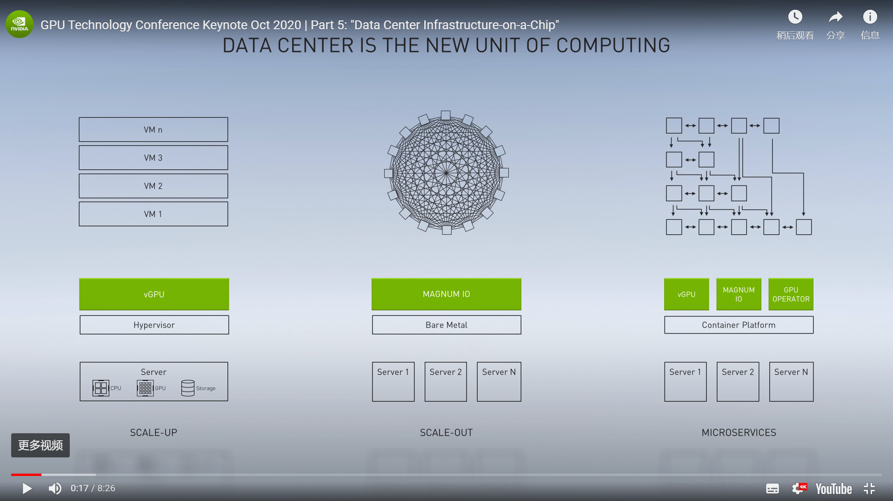
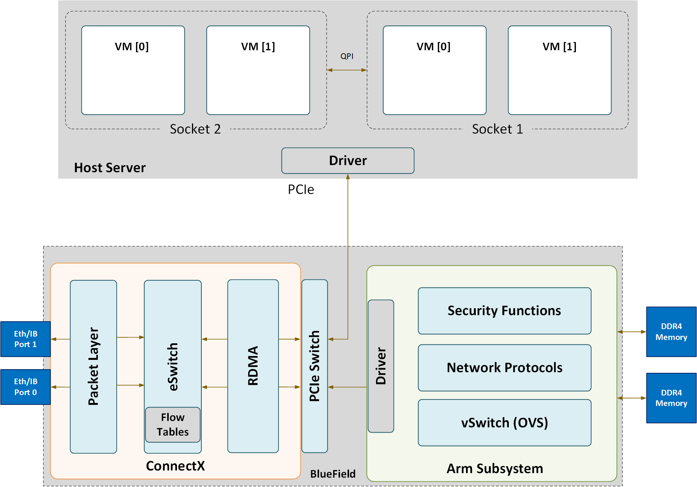
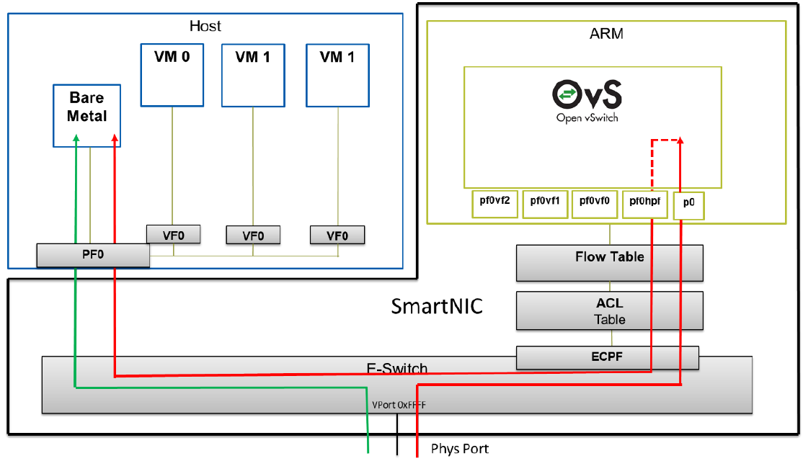

Next Generation of Infrastructure Architecture
Scenarios & Chanllenges
- Cloud Native: the number of connections grow with thousands times
- ScaleUp->ScaleOut->Mesh, see references item 1

- ScaleUp->ScaleOut->Mesh, see references item 1
Serverless: IO delay of stateful applications
- Ephemeral Storage and Serverless Durable Storage, see references item 2
1
2
3
4
5
6
7
8
9To expand support to stateful applications, serverless frameworks need to provide a way for tasks
to coordinate. For instance, if task A uses task B’s output there must be a way for A to know
when its input is available, even if A and B reside on different nodes. Many protocols aiming to
ensure data consistency also require similar coordination.
None of the existing cloud storage services come with notification capabilities. While cloud
providers do offer stand-alone notification services, such as SNS [42] and SQS [43], these services
add significant latency, sometimes hundreds of milliseconds. Also, they can be costly when used
for fine grained coordination. There have been some proposed research systems such as Pocket [44]
that do not have many of these drawbacks, but they have not yet been adopted by cloud providers.
- Ephemeral Storage and Serverless Durable Storage, see references item 2
Security: Zero-Trust
Key Technology
- Live migration for pass-through devices
- NVMe device emulation using a SmartNIC, Mellanox NVMe-SNAP
- Standardization: virtio, Michael S. Tsirkin, Cornelia Huck
- What’s New in Virtio 1.1
- Design of Vhost-pci
- vDPA, Full Offloading, see references item 3
Nvidia DPU Archtecture, DOCA
- Functional Diagram, see references item 4
 - Network Offload Diagram, see references item 4

References
[1] Nvidia Data Processing Units
[2] Cloud Programming Simplified: A Berkeley View on Serverless Computing
[3] VirtIO without the Virt
[4] BlueField Software Manual